Chromosome-level assembly of Thymus vulgaris
Curro Campuzano Jiménez
2023-06-24
Thyme’s Ecology in Saint-Martin-de-Londres

Figure 1: Spatial distribution of Thymus vulgaris phenolic (black) and non-phenolic (yellow) chemotypes. Obtained from Thompson (2020)
More complete scaffolds, but how?
We have a de novo assembly from HiFi, but it is highly fragmented
- Reads as input
- Contigs as input
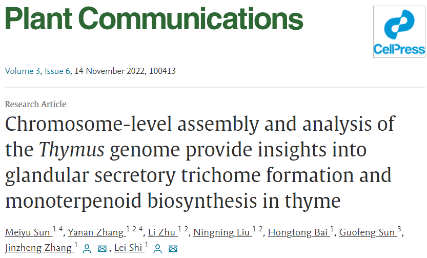
Data exploration
How T. vulgaris reads map to T. quinquecostatus genome?
- Most windows of T. quinquecostatus (\(\sim 75\%\)) correspond to Zero-process (repetitive sequences?)
\[ Y = \begin{cases} 0, & \textrm{with probability } p \\ \textrm{Poisson}(\lambda), & \textrm{with probability } 1-p \end{cases} \]
Is a homology-based assembly scaffolding approach effective without Hi-C data?
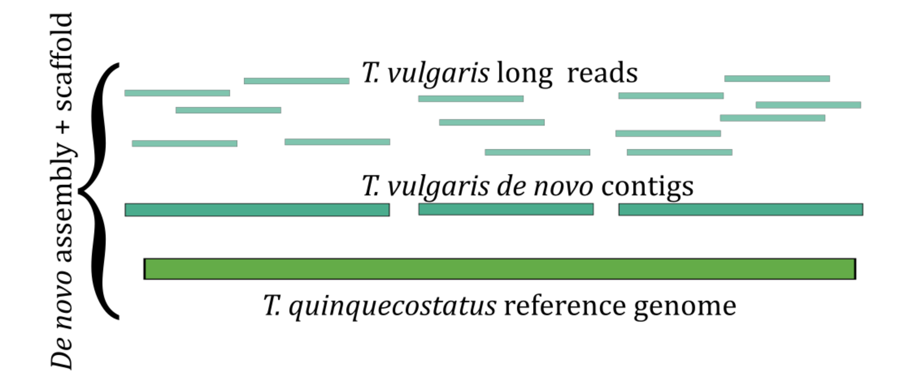Methods
Reproducible research
- Chained execution of many CLI
- Isolated software environment (using Conda and Singularity)
Contribution to Snakemake project
Results
Scaffolding process with RagTag (77% placed nucleotides)
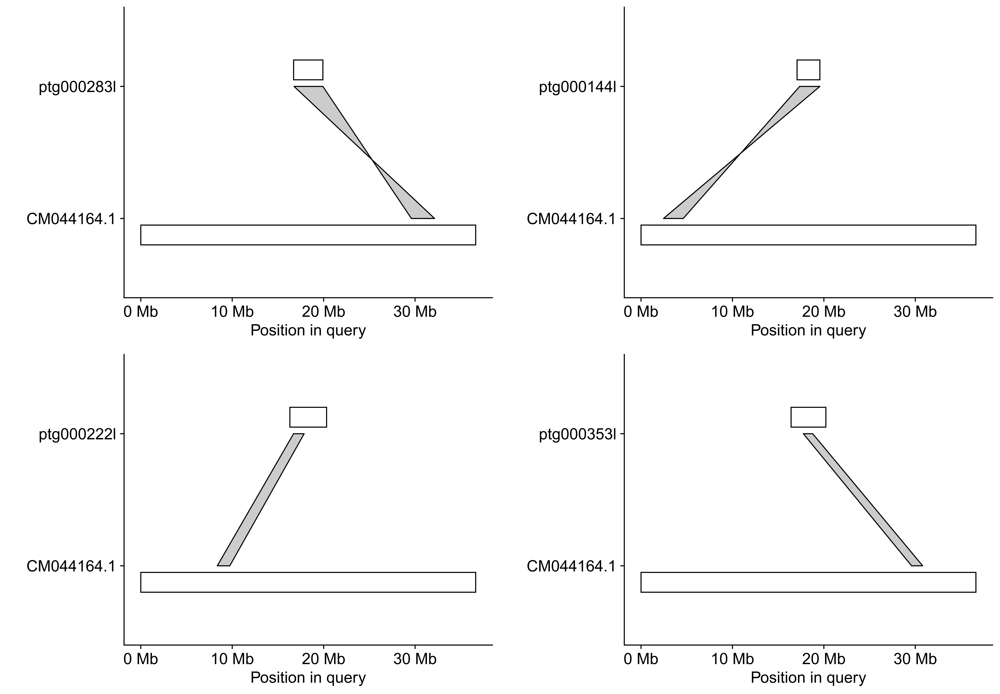Figure 3: Synteny-like plot of CM044164.1 (only four T. vulgaris contigs)
Genome assembly size
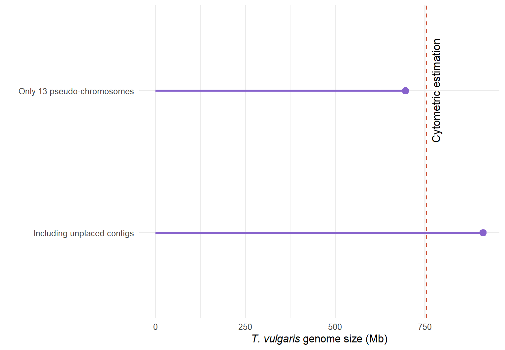Figure 4: Comparison of genome assembly size
Quality assessment: N50 (contiguity)
From 1.87 Mb (n=133) to 48.92 Mb (n=8)
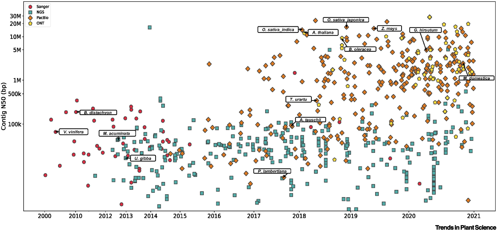Figure 5: For historical context, N50 statistics of the published plant genomes. Obtained from Sun et al. (2022)
Quality assessment: BUSCO
BUSCO looks for the presence of nearly-universal orthologous genes
Completeness score: 96.4%1 (using Eudicots dataset)
Disclaimer
Complete and duplicated genes is high (31.4%)
Recent genome duplication event?
Chimeric assembly of haplotypes?
Aligned short reads
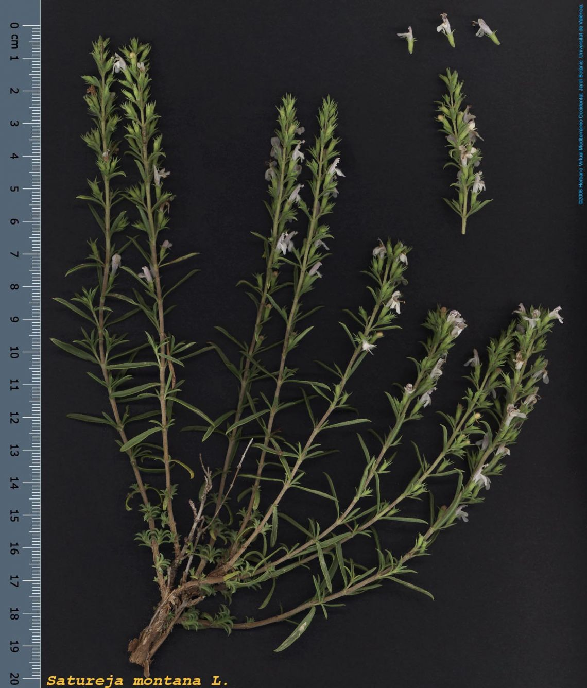
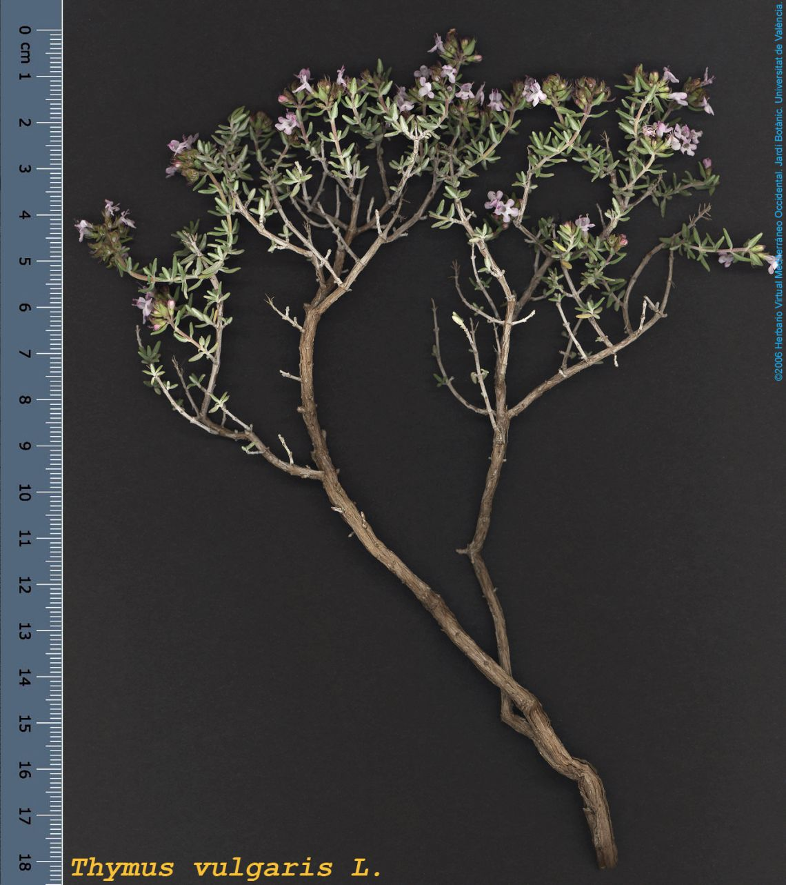
Validation using experimental data
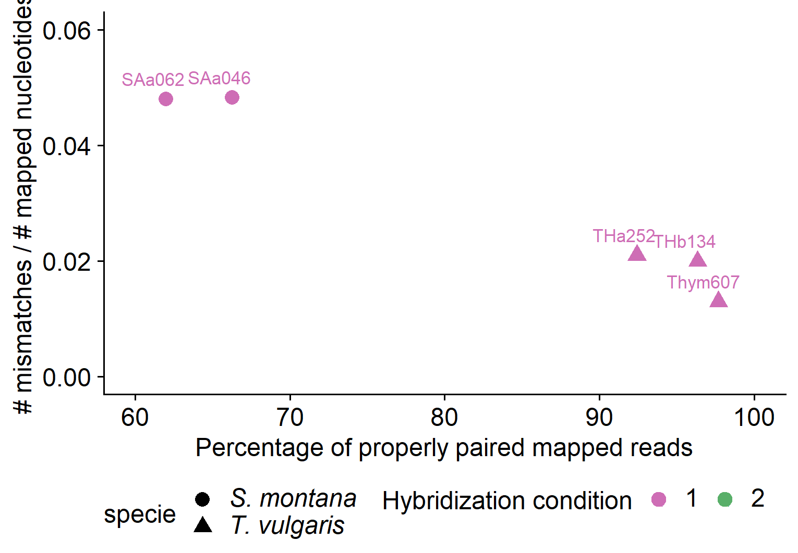Future work
Genome assembly quality evaluation: repetitive sequences
Validation with experimental data: transcriptome
Improve assembly: alternative reference-based scaffold algorithms
Phylogenetic analysis: thyme ecology
Conclussions
Take-home message
De novo assembly of HiFi reads + homology-based scaffolding is an effective approach to obtain a chromosome-level assembly but a more comprehensive evaluation and experimental validation
has to be done
Thanks!
References
Bataillon, Thomas, Perrine Gauthier, Palle Villesen, Sylvain Santoni, John D. Thompson, and Bodil K. Ehlers. 2022. “From Genotype to Phenotype: Genetic Redundancy and the Maintenance of an Adaptive Polymorphism in the Context of High Gene Flow.” Evolution Letters 6 (2): 189–202. https://doi.org/10.1002/evl3.277.
Sun, Yanqing, Lianguang Shang, Qian-Hao Zhu, Longjiang Fan, and Longbiao Guo. 2022. “Twenty Years of Plant Genome Sequencing: Achievements and Challenges.” Trends in Plant Science 27 (4): 391–401. https://doi.org/10.1016/j.tplants.2021.10.006.
Thompson, John D. 2020. “Plant Traits and Ecological Dynamics.” In Plant Evolution in the Mediterranean: Insights for Conservation, edited by John D. Thompson, 0. Oxford University Press. https://doi.org/10.1093/oso/9780198835141.003.0005.
Extra slides
Impact of Long-read sequencing technologies and Hi-C
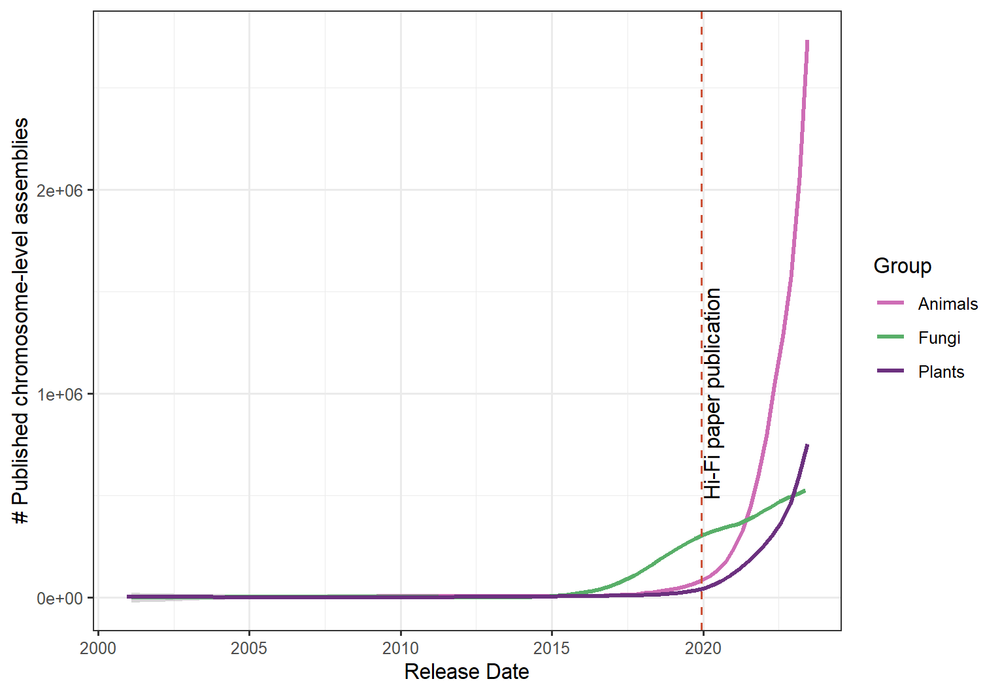Figure 6: Evolution of the number of published Chromosome-level genome assemblies. Data was retrieved from NCBI on 6/15/2023.
Hi-C
#/media/File:HiCschematic.png)
Obtained from Wikipedia
Quality control of raw reads
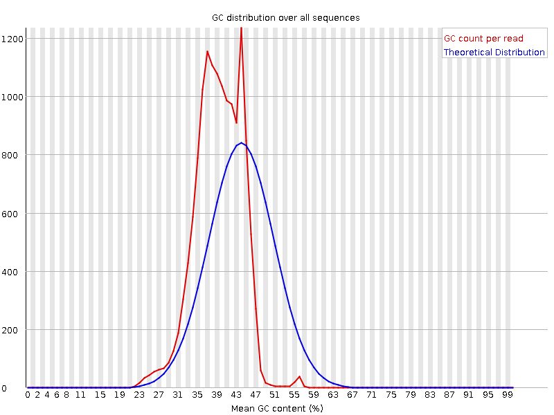
De novo assembly
HiFiasm assembled \(\sim 1.7\cdot 10^6\) long reads into \(\sim1.900\) contigs
\(N50= 1.87\)Mb
Important
Highly fragmented, but within the expectation for highly repetitive plant genomes
Bayesian inference using Julia (Turing library)
Whole-genome alignment between T. vulgaris and T. quinquecostatus
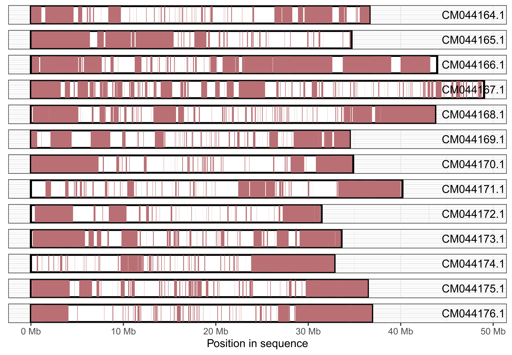Figure 8: Covered areas of T. quinquecostatus in the Whole-genome alignment
Infer gap sizes
RagTag infers the gap size between two adjacent sequences, \(\textrm{seq1}\) and \(\textrm{seq2}\), according to Equation
\[ \textrm{gapsize} = \left(\textrm{aln2}_\textrm{rs} - \textrm{aln2}_\textrm{qs}\right) - \left(\textrm{aln1}_\textrm{re} - \textrm{aln1}_\textrm{qe} + \textrm{len}(\textrm{seq1}\right)) \]
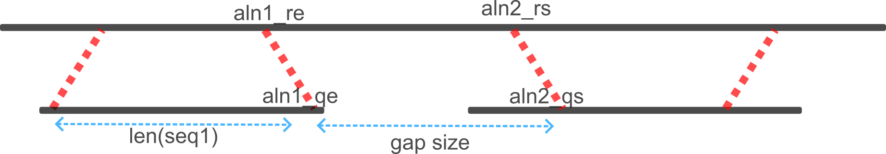Modelling T. vulgaris long reads aligned to T. quinquecostatus
- Align best 5% of reads to T. quinquecostatus assembly and model mapped reads using Bayesian inference
- Count mapped reads into 1000-length windows (reduce computational power)
- Fit Zero inflated Poisson
\[ Y = \begin{cases} 0, & \textrm{with probability } p \\ \textrm{Poisson}(\lambda), & \textrm{with probability } 1-p \end{cases} \]
Bayesian inference
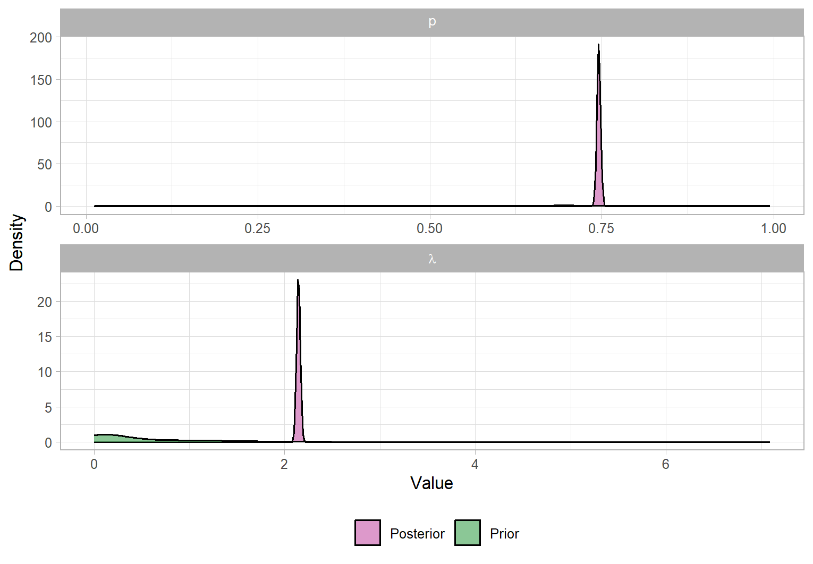Figure 9: Sampled posterior distribution of parameters for pseudo-chromosome CM044164.1 using MCMC
Validation using experimental data
Two hybridization conditions to enrich certain sequences: 15% and 5% of nucleotide divergence (Bataillon et al. 2022)
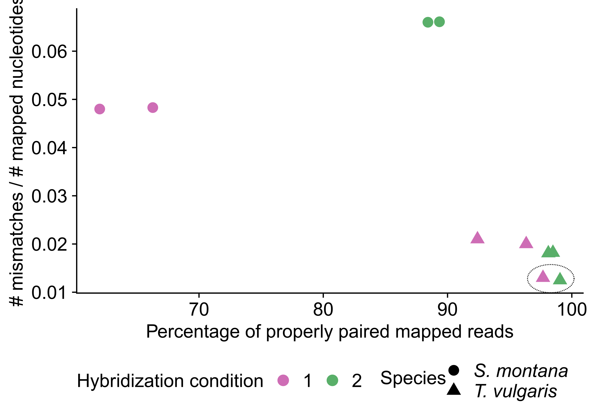
Project in Bioinformatics | MSc. in Bioinformatics at Aarhus University